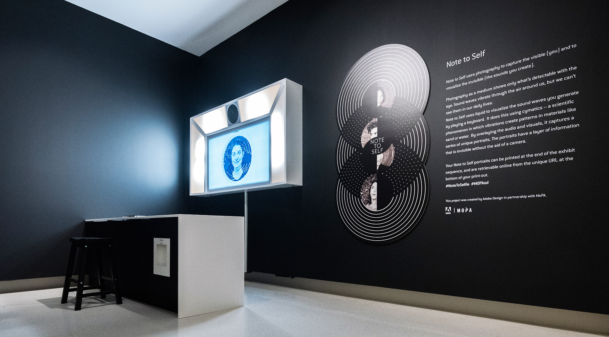
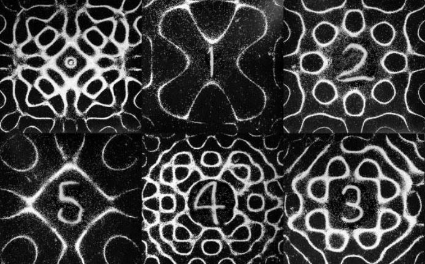
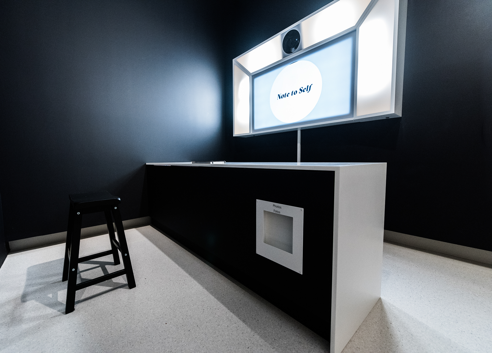

MOPA approached Adobe to help them develop an interactive installation that would be accompanying their exhibit “Visualizing the Invisible.” As a musician, I was really excited to work on this project because I’m always interested in joining my two passions - sound and visuals.

The museum knew from the beginning that they wanted to create a photo booth experience, because they had seen the SFMOMA Self-Composed Exhibit and wanted a similar keepsake takeaway. So our challenge was how to make this unique but also relevant to that particular museum and its accompanying exhibition.
We thought of several different things to visualize that were invisible, and because of my experience developing interactive audiovisual installations with sound, I particularly encouraged a musical component. We wanted this to be a fun and family-friendly experience that brought visitors of all ages into the museum. Sam Wick, the project’s Creative Director, brought in the idea of cymatics - visualizing sound waves through liquid.

I knew that museum-goers would be shy around microphones, so we went with a concept that involved a keyboard which played low, soothing tones. The sound vibrations from that keyboard were fed through a speaker which had a petri dish of highly viscous liquid on top. We overlaid footage of the cymatic pattern on a live selfie feed that captured photos of museum-goers playing and posing in increments like a photobooth. After three photos, you get a print out that shows a unique pattern of the sounds you were making in that particular moment.

Once we had the concept for the installation, it was all about how to communicate that to a museum-goer. We designed an attract state that would loop and give a visual explanation of how to interact with the keyboard. This required developing a visual language that we carried throughout the rest of the branded elements - from the wall graphics to the print-outs themselves.

The real work, however, was bringing it into the physical world. We not only designed the user experience, but we specced out the mechanics and software of how this would really be a working museum installation. Will Ruby took lead that and most aspects of the project, building on his experience from the SFMOMA install, and troubleshooting many different ways to keep it running sustainably.

The team for this project was sourced from the larger Adobe Design team, but because it was a pro bono project, it meant that all the designers were donating their time on top of their other projects. It took a village, but it was a fun and rewarding to see it all come together in the museum. I loved getting to see people of all ages making funny faces and weird sounds and taking away unique photo booth prints.
